- Módulo: Aministración Sistemas Operativos
- Título del trabajo Autenticación LDAP
- Componentes del grupo: Isabel Quintero Sánchez
- Curso Académico: 2014/2015
- Fecha de entrega: 10 de Noviembre de 2014
Instalamos el paquete "libpam-ldap" ejecutando el comando: apt-get install libpam-ldap.
Indicamos la URI o dirección para acceder al servidor LDAP. Si no especificamos el puerto, cogerá el puerto por defecto 389.
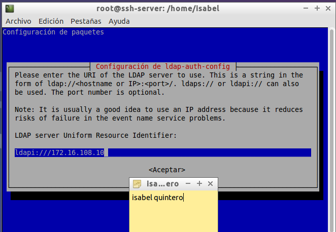Especificamos la base del directorio LDAP (baseDN).
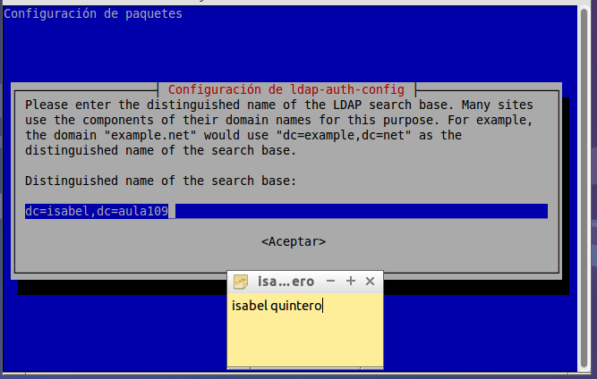Indicamos “Sí”, de forma que el usuario “root” podrá cambiar las contraseñas de los usuarios del directorio LDAP del mismo modo en que cambia las contraseñas de los usuarios locales. En mi captura sale la opción que "no", y como no funcionaba, volví a instalarlo y finalmente le di a que "sí" pero me olvidé de hacer captura.
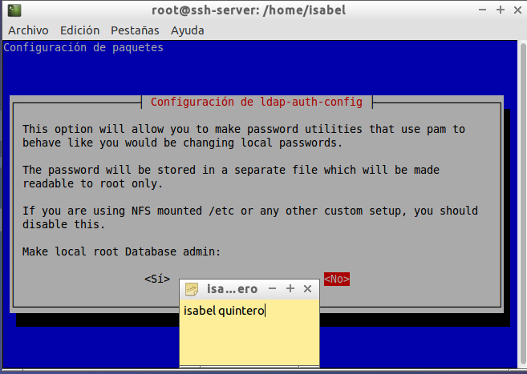Indicamos la cuenta del administrador del servidor LDAP, de forma que los cambios de contraseña realizados por el administrador del sistema “root” se puedan actualizar en el directorio LDAP.
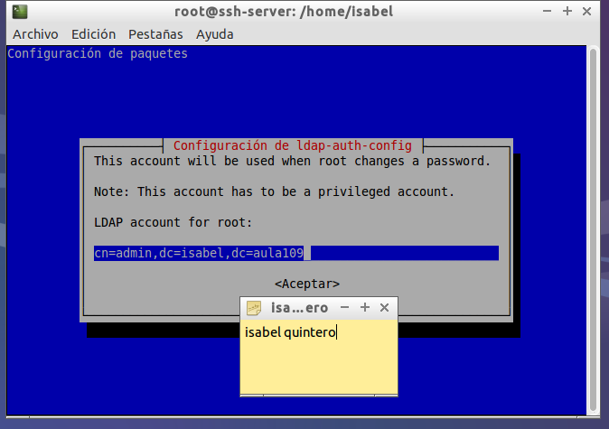Indicamos la contraseña del administrador del directorio LDAP.
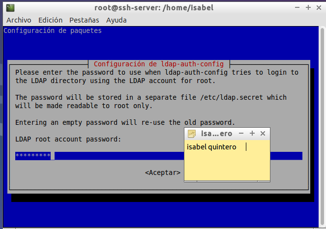Entramos en el fichero de configuración "/etc/ldap.conf". Primero, habilitamos el host y ponemos la ip del servidor.
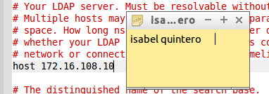Habilitamos la línea del puerto 389.
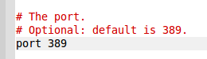Y, las unidades organizativas donde encontrar las cuentas de los usuarios, las contraseñas y los grupos, y los editamos según los hemos creado anteriormente.
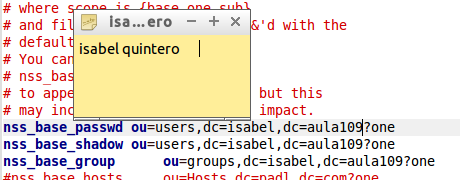Para que el servidor LDAP actúe como si se tratara de los archivos "/etc/passwd", "/etc/group" y "/etc/shadow", además de instalar las librerías anteriores, debemos indicar que se utilice LDAP como alternativa para autentificar usuarios. Para ello hay que añadir en el archivo "/etc/nsswitch.conf", exactamente en las líneas que hacen referencia a “passwd”, “group” y “shadow”, la palabra ldap tras la palabra compat quedando el archivo "/etc/nsswitch.conf" así:
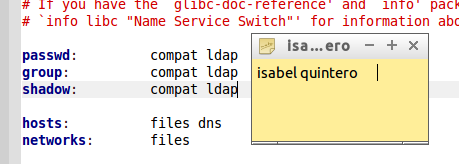Para que los servicios de nuestro sistema utilicen las librerías pam-ldap para autentificar al usuario, debemos añadir en el archivo "/etc/pam.d/common-auth" la siguiente línea, justo encima de la línea "pam_unix.so".
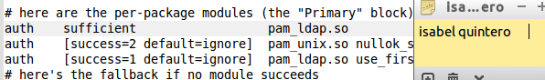Para permitir que los servicios de nuestro sistema comprueben la cuenta del usuario mediante las librerías pam-ldap, debemos añadir en el archivo "/etc/pam.d/common-account" la siguiente línea justo encima de la línea "pam_unix.so":
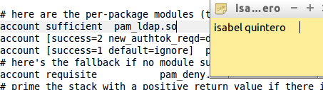Para permitir que los servicios de nuestro sistema obtengan los parámetros de la sesión de usuario mediante las librerías pam- ldap, debemos añadir en el archivo "/etc/pam.d/common-session" la siguiente línea encima de la línea "pam_unix.so":
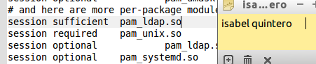Para permitir que los servicios de nuestro sistema puedan modificar la contraseña del usuario mediante las librerías pam-ldap, debemos añadir en el archivo "/etc/pam.d/common-password" la siguiente línea encima de la línea "pam_unix.so":
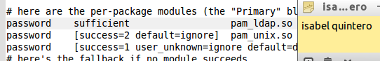Finalmente, añadimos al final del fichero "/etc/pam.d/common-session" la siguiente línea: "session required pam_mkhomedir.so skel=/etc/skel umask=0022". De esta forma, cuando un usuario inicie sesión y no disponga de directorio HOME, se creará a partir de los ficheros /etc/skel (skel=/etc/skel) y con los permisos rw-rw-r- (umask=0022).
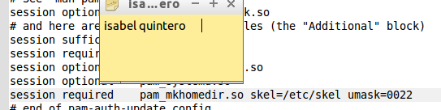No hacemos la comprobación porque la máquina virtual no ha funcionado y se queda la práctica como está.